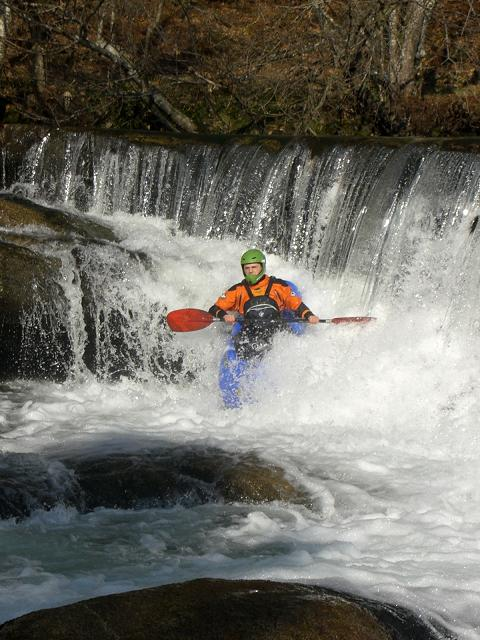
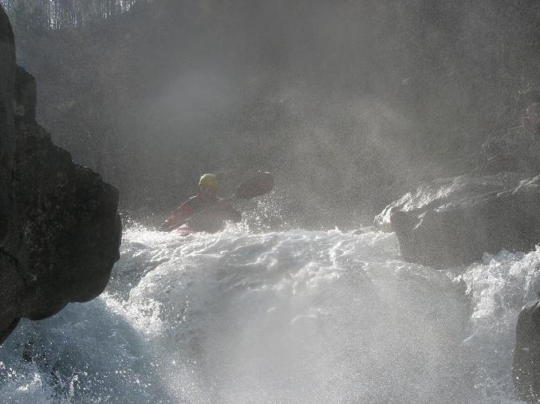

Vouga
‘La indecisión es la llave a la
flexibilidad’
|
|
Vouga |
||
|---|---|---|---|---|
|
‘La indecisión es la llave a la
flexibilidad’ |
Vouga
The next day we went to the Vouga. Here's Rob J. on the small dam at the put-in...
Here's Pedro, another local, on the same drop...

There wasn't much going on on the Vouga, so there are very few photos. There was one good drop - here's Filipe charging. In Portugal you have to pay attention to the rock type - nice looking drops can be seriously undercut with nasty caves lurking behind them. Big scour-holes and sieves are everywhere.
